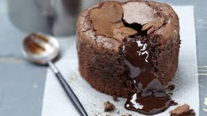

Moelleux au chocolat
Préparation possible à l'avance. Réchauffer avant dégustation quelques secondes à mi-puissance au micro-ondes.
Ingrédients
- 125 g de chocolat
- 80 g de beurre
- 60 g de sucre glace
- 38 g de farine
- 2 oeufs
Recette
- faire fondre le chocolat.
- Ajouter le beurre en morceaux peu à peu et l'incorporer pour obtenir un crème bien lisse.
- Mettre la farine et le sucre glace dans un saladier. Ajouter les oeufs entiers et mélanger jusqu'à obtention d'une émulsion homogène.
- Verser le mélange chocolat-beurre sur cette préparation. Mélanger.
- Beurrer et fariner 2 moules individuels ou 3 (suivant l'epaoisseur voulut)
- Verser la préparation et mettre à four chaud (200°C) - 10 min pour les gâteaux.
- Servir tiède avec une crème anglaise (le centre doit être coulant) ou servir froid nappé de ganache au chocolat.